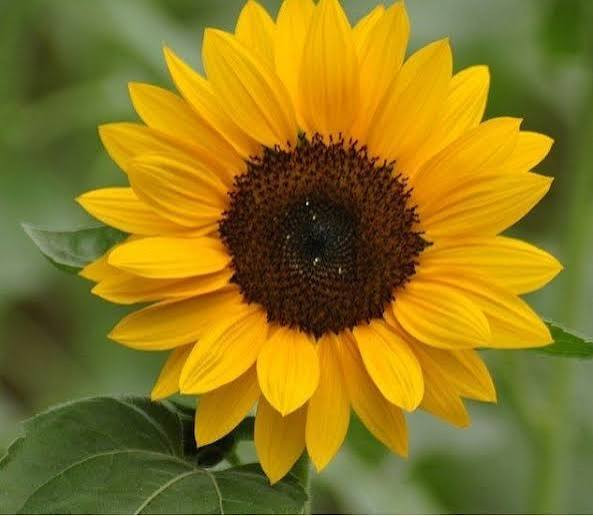
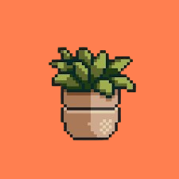
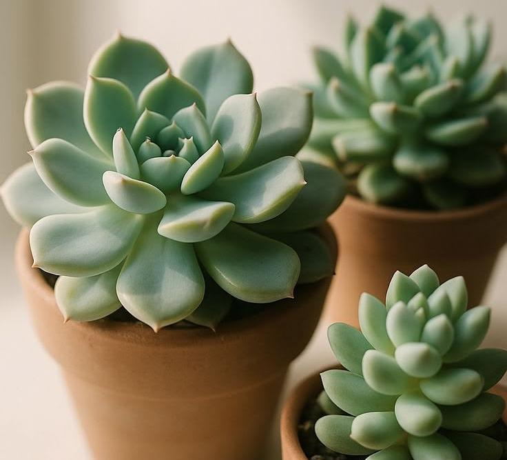
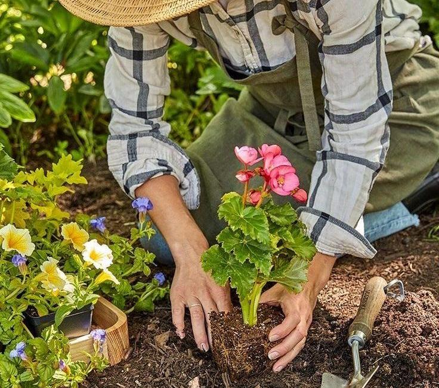
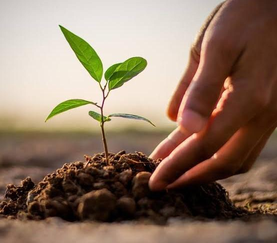

Flores
Qual flor se encaixa mais para seu estilo de vida.

Trazer plantas para dentro de casa é respirar melhor, desacelerar e se conectar com a natureza todos os dias. Encontre a espécie perfeita para o seu espaço.

Qual flor se encaixa mais para seu estilo de vida.

Descubra tipos de plantas ideais para decorar e trazer vida para sua casa.

Quantidade de luz, água e outras coisas para cuidar da sua plantinha.

Quais são os cuidados necessarios para todos os tipos de plantas.